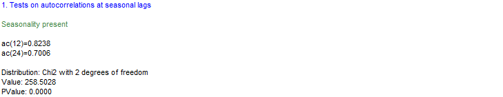

Tests
Introduction
This chapter describes all the tests available in JDemetra+, via Graphical User interface and/or R packages. An outline of the underlying theoretical principles of each test is provided.
The procedure to apply these tests in context is described when their use is relevant in the chapters dedicated to algorithms description, mainly on seasonal adjustment.
Tests on residuals
| Test | Purpose | GUI | R package |
|---|---|---|---|
| Ljung-Box | autocorrelation | yes | |
| Box-Pierce | autocorrelation | yes | |
| Doornik-Hansen | normality | yes | rjd3tookit |
Ljung-Box
The Ljung-Box Q-statistics are given by:
\[ \text{LB}\left( k \right) = n \times (n + 2) \times \sum_{k = 1}^{K}\frac{\rho_{a,k}^{2}}{n - k} \tag{1}\]
where \(\rho_{a,k}^{2}\) is the autocorrelation coefficient at lag \(k\) of the residuals \({\widehat{a}}_{t}\), \(n\) is the number of terms in differenced (? differenciated ?) series, \(K\) is the maximum lag being considered, set in JDemetra+ to \(24\) (monthly series) or \(8\) (quarterly series).
If the residuals are random (which is the case for residuals from a well specified model), they will be distributed as \(\chi_{(K - m)}^{2}\), where \(m\) is the number of parameters in the model which has been fitted to the data. (edit: not the residuals, but \(\widehat{\rho}\) )
The Ljung-Box and Box-Pierce tests sometimes fail to reject a poorly fitting model. Therefore, care should be taken not to accept a model on a basis of their results. For the description of autocorrelation concept see section Autocorrelation function and partial autocorrelation function.
Box-Pierce
The Box-Pierce Q-statistics are given by:
\[ \text{BP}\left( k \right) = n\sum_{k = 1}^{K}\rho_{a,k}^{2} \]
where:
\(\rho_{a,k}^{2}\) is the autocorrelation coefficient at lag \(k\) of the residuals \({\widehat{a}}_{t}\).
\(n\) is the number of terms in differenced (differenciated?) series;
\(K\) is the maximum lag being considered, set in JDemetra+ to \(24\) (monthly series) or \(8\) (quarterly series).
If the residuals are random (which is the case for residuals from a well specified model), they will be distributed as \(\chi_{(K - m)}^{2}\) degrees of freedom, where \(m\) is the number of parameters in the model which has been fitted to the data.(edit: same as above)
Dornik-Hansen
The Doornik-Hansen test for multivariate normality (DOORNIK, J.A., and HANSEN, H. (2008)) is based on the skewness and kurtosis of multivariate data that is transformed to ensure independence. It is more powerful than the Shapiro-Wilk test for most tested multivariate distributions1.
The skewness and kurtosis are defined, respectively, as: \(s = \frac{m_{3}}{\sqrt{m_{2}}^{3}}\) and \(k = \frac{m_{4}}{m_{2}^{2}}\),
where:
\(m_{i} = \frac{1}{n}\sum_{i = 1}^{n}{(x_{i}}{- \overline{x})}^{i}\) ;
\(\overline{x} = \frac{1}{n}\sum_{i = 1}^{n}x_{i}\) ;
\(n\) is a number of (non-missing) residuals.
The Doornik-Hansen test statistic derives from SHENTON, L.R., and BOWMAN, K.O. (1977) and uses transformed versions of skewness and kurtosis.
The transformation for the skewness \(s\) into \(\text{z}_{1}\) is as in D’AGOSTINO, R.B. (1970):
\[ \beta = \frac{3(n^{2} + 27n - 70)(n + 1)(n + 3)}{(n - 2)(n + 5)(n + 7)(n + 9)} \]
\[ \omega^{2} = - 1 + \sqrt{2(\beta - 1)} \]
\[ \delta = \frac{1}{\sqrt{\log{(\omega}^{2})}} \]
\[ y = s\sqrt{\frac{(\omega^{2} - 1)(n + 1)(n + 3)}{12(n - 2)}} \]
\[ z_{1} = \delta log(y + \sqrt{y^{2} - 1}) \]
The kurtosis \(k\) is transformed from a gamma distribution to \(\chi^{2}\), which is then transformed into standard normal \(z_{2}\) using the Wilson-Hilferty cubed root transformation:
\[ \delta = (n - 3)(n + 1)(n^{2} + 15n - 4) \]
\[ a = \frac{(n - 2)(n + 5)(n + 7)(n^{2} + 27n - 70)}{6\delta} \]
\[ c = \frac{(n - 7)(n + 5)(n + 7)(n^{2} + 2n - 5)}{6\delta} \]
\[ l= \frac{(n + 5)(n + 7)({n^{3} + 37n}^{2} + 11n - 313)}{12\delta} \]
\[ \alpha = a + c \times s^{2} \]
\[ \chi = 2l(k - 1 - s^{2}) \]
\[ z_{2} = \sqrt{9\alpha}\left( \frac{1}{9\alpha} - 1 + \sqrt[3]{\frac{\chi}{2\alpha}} \right) \]
Finally, the Doornik-Hansen test statistic is defined as the sum of squared transformations of the skewness and kurtosis. Approximately, the test statistic follows a \(\chi^{2}\) distribution, i.e.:
\[ DH = z_{1}^{2} + z_{2}^{2}\sim\chi^{2}(2) \]
Seasonality tests
table with all tests by purpose and accessibility
| Test | Purpose | GUI | R package |
|---|---|---|---|
| QS test | Autocorrelation at seasonal lags | yes | |
| F-test with seasonal dummies | Stable seasonality | yes | rjd3sa |
| Identification of spectral peaks | Seasonal frequencies | yes | rjd3sa |
| Friedman test | Stable seasonality | yes | rjd3sa |
| Two-way variance analysis | Moving seasonality | yes |
QS Test on autocorrelation at seasonal lags
The QS test is a variant of the Ljung-Box test computed on seasonal lags, where we only consider positive auto-correlations
More exactly,
\[ QS=n \left(n+2\right)\sum_{i=1}^k\frac{\left[ \max \left(0, \hat\gamma_{i \cdot l}\right)\right]^2}{n-i \cdot l} \]
where \(k=2\), so only the first and second seasonal lags are considered. Thus, the test would checks the correlation between the actual observation and the observations lagged by one and two years. Note that \(l=12\) when dealing with monthly observations, so we consider the autocovariances \(\hat\gamma_{12}\) and \(\hat\gamma_{24}\) alone. In turn, \(k=4\) in the case of quarterly data.
Under H0, which states that the data are independently distributed, the statistics follows a \(\chi \left(k\right)\) distribution. However, the elimination of negative correlations makes it a bad approximation. The p-values would be given by \(P(\chi^{2}\left( k \right) > Q)\) for \(k = 2\). As \({P(\chi}^{2}(2)) > 0.05 = 5.99146\) and \({P(\chi}^{2}(2)) > 0.01 = 9.21034\), \(QS > 5.99146\) and \(QS > 9.21034\) would suggest rejecting the null hypothesis at \(95\%\) and \(99\%\) significance levels, respectively.
Modification
Maravall (2012) proposes approximate the correct distribution (p-values) of the QS statistic using simulation techniques. Using 1000K replications of sample size 240, the correct critical values would be 3.83 and 7.09 with confidence levels of \(95\%\) and \(99\%\), respectively (lower than the 5.99146 and 9.21034 shown above). For each of the simulated series, he obtains the distribution by assuming \(QS=0\) when \(\hat\gamma_{12}\), so in practice this test will detect seasonality only when any of these conditions hold: - Statistically significant positive autocorrelation at lag 12 - Non-negative sample autocorrelation at lag 12 and statistically significant positive autocorrelation at lag 24
Use
The test can be applied directly to any series by selecting the option Statistical Methods >> Seasonal Adjustment >> Tools >> Seasonality Tests. This is an example of how results are displayed for the case of a monthly series:

The test can be applied to the input series before any seasonal adjustment method has been applied. It can also be applied to the seasonally adjusted series or to the irregular component.
References
- LJUNG G. M. and G. E. P. BOX (1978). “On a Measure of a Lack of Fit in Time Series Models”. Biometrika 65 (2): 297–303. doi:10.1093/biomet/65.2.297
- MARAVALL, A. (2011). “Seasonality Tests and Automatic Model Identification in Tramo-Seats”. Manuscript
- MARAVALL, A. (2012). “Update of Seasonality Tests and Automatic Model Identification in TRAMO-SEATS”. Bank of Spain (November 2012)
F-test on seasonal dummies
The F-test on seasonal dummies checks for the presence of deterministic seasonality. The model used here uses seasonal dummies (mean effect and 11 seasonal dummies for monthly data, mean effect and 3 for quarterly data) to describe the (possibly transformed) time series behaviour. The test statistic checks if the seasonal dummies are jointly statistically not significant. When this hypothesis is rejected, it is assumed that the deterministic seasonality is present and the test results are displayed in green.
This test refers to Model-Based \(\chi^{2}\ \) and F-tests for Fixed Seasonal Effects proposed by LYTRAS, D.P., FELDPAUSCH, R.M., and BELL, W.R. (2007) that is based on the estimates of the regression dummy variables and the corresponding t-statistics of the Reg-Arima model, in which the ARIMA part of the model has a form (0,1,1)(0,0,0). The consequences of a misspecification of a model are discussed in LYTRAS, D.P., FELDPAUSCH, R.M., and BELL, W.R. (2007).
For a monthly time series the Reg-Arima model structure is as follows:
\[ \left( 1 - B \right)\left( y_{t} - \beta_{1}M_{1,t} - \ldots - \beta_{11}M_{11,t} - \gamma X_{t} \right) = \mu + (1 - B)a_{t} \]
where:
\(M_{j,t} =\begin{cases}1 & \text{ in month } j = 1, \ldots, 11 \\- 1 & \text{ in December}\\0 & \text{ otherwise}\end{cases} \text{ - dummy variables;}\)
\(y_{t}\) – the original time series;
\(B\) – a backshift operator;
\(X_{t}\) – other regression variables used in the model (e.g. outliers, calendar effects, user-defined regression variables, intervention variables);
\(\mu\) – a mean effect;
\(a_{t}\) – a white-noise variable with mean zero and a constant variance.
In the case of a quarterly series the estimated model has a form:
\[ \left( 1 - B \right)\left( y_{t} - \beta_{1}M_{1,t} - \ldots - \beta_{3}M_{3,t} - \gamma X_{t} \right) = \mu + (1 - B)a_{t} \tag{2}\]
where:
\[ M_{j,t} = \begin{cases} 1 & \text{ in quarter} j = 1, \ldots, 3 \\ - 1 & \text{ in the fourth quarter}\\ 0 & \text{ otherwise} \end{cases} \text{ - dummy variables;} \]
One can use the individual t-statistics to assess whether seasonality for a given month is significant, or a chi-squared test statistic if the null hypothesis is that the parameters are collectively all zero. The chi-squared test statistic is \({\widehat{\chi}}^{2} = {\widehat{\beta}}^{'}{\lbrack Var(\widehat{\beta})}^{\ })^{- 1}\rbrack{\widehat{\beta}}^{\ }\) in this case compared to critical values from a \(\chi^{2}\left( \text{df} \right)\)-distribution, with degrees of freedom \(df = 11\) (monthly series) or \(df = 3\) (quarterly series). Since the \({Var(\widehat{\beta})}^{\ }\) computed using the estimated variance of \(\alpha_{t}\) may be very different from the actual variance in small samples, this test is corrected using the proposed \(\text{F}\) statistic:
\[ F = \frac{ {\widehat{\chi}}^{2}}{s - 1} \times \frac{n - d - k}{n - d} \]
where \(n\) is the sample size, \(d\) is the degree of differencing, s is time series frequency (12 for a monthly series, 4 for a quarterly series) and \(k\) is the total number of regressors in the Reg-Arima model (including the seasonal dummies \(\text{M}_{j,t}\) and the intercept).
This statistic follows a \(F_{s - 1,n - d - k}\) distribution under the null hypothesis.
Identification of spectral peaks
Friedman test for stable seasonality test
The Friedman test is a non-parametric method for testing that samples are drawn from the same population or from populations with equal medians. The significance of the month (or quarter) effect is tested. The Friedman test requires no distributional assumptions. It uses the rankings of the observations. If the null hypothesis of no stable seasonality is rejected at the 0.10% significance level then the series is considered to be seasonal and the test’s outcome is displayed in green.
The test statistic is constructed as follows. Consider first the matrix of data \(\left\{x_{ij}\right\}_{n \times k}\) with \(n\) rows (the blocks, i.e. number of years in the sample), \(k\) columns (the treatments, i.e. either 12 months or 4 quarters, depending on the frequency of the data).
The data matrix needs to be replaced by a new matrix \(\left\{r_{ij}\right\}_{n \times k}\), where the entry \(r_{ij}\) is the rank of \(x_{ij}\) within block \(i\) .
The test statistic is given by
\[ Q=\frac{SS_t}{SS_e} \]
where \(SS_t=n \sum_{j=1}^{k}(\bar{r}_{.j}-\bar{r})^2\) and \(SS_e=\frac{1}{n(k-1)} \sum*{i=1}^{n}*\sum{j=1}^{k}(r_{ij}-^\bar{r})2\). It represents the variance of the average ranking across treatments j relative to the total.
Under the hypothesis of no seasonality, all months can be equally treated. For the sake of completeness: - \(\bar{r}*{.j}\) is the average ranks of each treatment (month) j within each block (year) - The average rank is given by \(* \bar{r}=\frac{1}{nk}\sum{i=1}^{n}\sum*{j=1}^{k}(r*{ij})\)
For large \(n\) or \(k\) , i.e. \(n > 15\) or \(k > 4\), the probability distribution of \(Q\) can be approximated by that of a chi-squared distribution. Thus, the p-value is given by \(P( \chi^2_{k-1}>Q)\).
Use
The test can be applied directly to any series by selecting the option Statistical Methods >> Seasonal Adjustment >> Tools >> Seasonality Tests. This is an example of how results are displayed for the case of a monthly series:

If the null hypothesis of no stable seasonality is rejected at the 1% significance level, then the series is considered to be seasonal and the outcome of the test is displayed in green.
The test can be applied to the input series before any seasonal adjustment method has been applied. It can also be applied to the seasonally adjusted series or to the irreguar component. In the case of X-13ARIMA-SEATS, the test is applied to the preliminary estimate of the unmodified Seasonal-Irregular component2 (time series shown in Table B3). In this estimate, the number of observations is lower than in the final estimate of the unmodified Seasonal-Irregular component. Thus, the number of degrees of freedom in the stable seasonality test is lower than the number of degrees of freedom in the test for the presence of seasonality assuming stability. For example, X-13ARIMA-SEATS uses a centred moving average of order 12 to calculate the preliminary estimation of trend. Consequently, the first six and last six points in the series are not computed at this stage of calculation. The preliminary estimation of the trend is then used for the calculation of the preliminary estimation of the unmodified Seasonal-Irregular.
References
Friedman, Milton (December 1937). “The use of ranks to avoid the assumption of normality implicit in the analysis of variance”. Journal of the American Statistical Association (American Statistical Association) 32 (200): 675–701. doi:10.2307/2279372. JSTOR 2279372.
Friedman, Milton (March 1939). “A correction: The use of ranks to avoid the assumption of normality implicit in the analysis of variance”. Journal of the American Statistical Association (American Statistical Association) 34 (205): 109. doi:10.2307/2279169. JSTOR
Friedman, Milton (March 1940). “A comparison of alternative tests of significance for the problem of m rankings”. The Annals of Mathematical Statistics 11 (1): 86–92. doi:10.1214/aoms/1177731944. JSTOR 2235971.
Moving seasonality test
The evolutive seasonality test is based on a two-way analysis of variance model. The model uses the values from complete years only. Depending on the decomposition type for the Seasonal – Irregular component it uses Equation 1 (in the case of a multiplicative model) or Equation 2 (in the case of an additive model):
\[ \left|\text{SI}_{\text{ij}} - 1 \right| = X_{\text{ij}} = b_{i} + m_{j} + e_{\text{ij}} \]
\[ \left| \text{SI}_{\text{ij}} \right| = X_{\text{ij}} = b_{i} + m_{j} + e_{\text{ij}} \]
where:
\(m_{j}\) – the monthly or quarterly effect for \(j\)-th period, \(j = (1,\ldots,k)\), where \(k = 12\) for a monthly series and \(k = 4\) for a quarterly series;
\(b_{j}\) – the annual effect \(i\), \((i = 1,\ldots,N)\) where \(N\) is the number of complete years;
\(e_{\text{ij}}\) – the residual effect.
The test is based on the following decomposition:
\[ S^{2} = S_{A}^{2} + S_{B}^{2} + S_{R}^{2}, \tag{3}\]
where:
\(S^{2} = \sum_{j = 1}^{k}{\sum_{i = 1}^{N}\left( {\overline{X}}_{\text{ij}} - {\overline{X}}_{\bullet \bullet} \right)^{2}}\) –the total sum of squares;
\(S_{A}^{2} = N\sum_{j = 1}^{k}\left( {\overline{X}}_{\bullet j} - {\overline{X}}_{\bullet \bullet} \right)^{2}\) – the inter-month (inter-quarter, respectively) sum of squares, which mainly measures the magnitude of the seasonality;
\(S_{B}^{2} = k\sum_{i = 1}^{N}\left( {\overline{X}}_{i \bullet} - {\overline{X}}_{\bullet \bullet} \right)^{2}\) – the inter-year sum of squares, which mainly measures the year-to-year movement of seasonality;
\(S_{R}^{2} = \sum_{i = 1}^{N}{\sum_{j = 1}^{k}\left( {\overline{X}}_{\text{ij}} - {\overline{X}}_{i \bullet} - {\overline{X}}_{\bullet j} - {\overline{X}}_{\bullet \bullet} \right)^{2}}\) – the residual sum of squares.
The null hypothesis \(H_{0}\) is that \(b_{1} = b_{2} = ... = b_{N}\) which means that there is no change in seasonality over the years. This hypothesis is verified by the following test statistic:
\[ F_{M} = \frac{\frac{S_{B}^{2}}{(n - 1)}}{\frac{S_{R}^{2}}{(n - 1)(k - 1)}} \]
which follows an \(F\)-distribution with \(k - 1\) and \(n - k\) degrees of freedom.
Combined seasonality test
This test combines the Kruskal-Wallis test along with test for the presence of seasonality assuming stability (\(F_{S}\)), and evaluative seasonality test for detecting the presence of identifiable seasonality (\(F_{M}\)). Those three tests are calculated using the final unmodified SI component. The main purpose of the combined seasonality test is to check whether the seasonality of the series is identifiable. For example, the identification of the seasonal pattern is problematic if the process is dominated by highly moving seasonality3. The testing procedure is shown in the figure below.